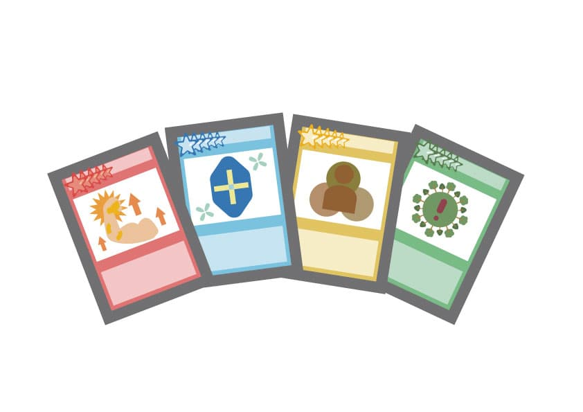

作品のポイント
目次
カード一覧
この作品では、人々が持つ遺伝子をゲームにした遺伝子カードゲーム、 通称「カードゲノム！」です。
- DNAカード
- スキルカード
- 祖先カード
- 環境イベントカード
- その他
作品紹介

このカードゲームは様々な遺伝子情報を「DNA」「スキル」など複数のタイプがあるため、 それぞれの分野の遺伝子情報を学ぶことができます。
遺伝子検査chat GENE Proをゲーム界隈の人に楽しく身近に体験してもらうために、 遺伝子情報をカードゲーム化した「カードゲノム！」を考えました。 科学的に正確な情報をゲームの中で「スキル」「祖先情報」「体質」などのカードとして表現することで、 ユーザーは楽しみながら自分自身について深く知ることができます。 遺伝子の多様性や特徴が戦略・デッキ構築・チーム戦に活きるため、 楽しみながら自分を知る新しい体験が可能になります。
コンセプト
この作品では、「遺伝子検査chat GENE Proをゲーム界隈の人に楽しく身近に体験してもらう」という考えをテーマにしました。 カードゲームにすることでより遺伝子検査に親しみを持てるようにしました。
科学的に正確な情報をゲームの中で「スキル」「祖先情報」「体質」などのカードとして表現することで、 ユーザーは楽しみながら自分自身について深く知ることができます。
遺伝子の多様性や特徴が戦略・デッキ構築・チーム戦に活きるため、 楽しみながら自分を知る新しい体験が可能になります。